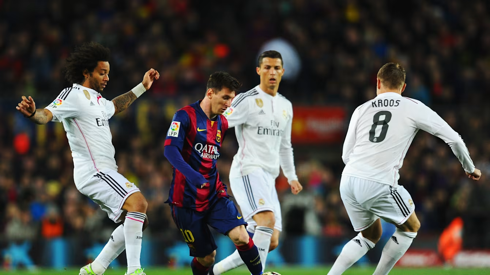
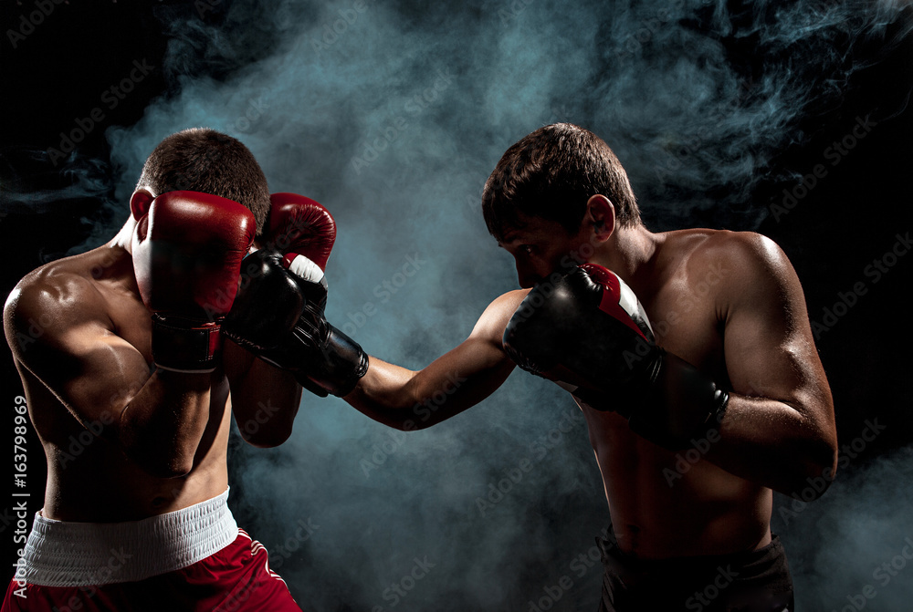

Football is a family of team sports that involve, to varying degrees, kicking a ball to score a goal. Unqualified, the word football generally means the form of football that is the most popular where the word is used. Sports commonly called football include association football (known as soccer in Australia, Canada, South Africa, the United States, and sometimes in Ireland and New Zealand); Australian rules football; Gaelic football; gridiron football (specifically American football, arena football, or Canadian football); International rules football; rugby league football; and rugby union football.[1] These various forms of football share, to varying degrees, common origins and are known as "football codes".
Although the term "boxing" is commonly attributed to western boxing, in which only fists are involved, it has developed in different ways in different geographical areas and cultures of the World. In global terms, "boxing" today is also a set of combat sports focused on striking, in which two opponents face each other in a fight using at least their fists, and possibly involving other actions, such as kicks, elbow strikes, knee strikes, and headbutts, depending on the rules. Some of these variants are the bare-knuckle boxing, kickboxing, Muay Thai, Lethwei, savate, and sanda.[2][3] Boxing techniques have been incorporated into many martial arts, military systems, and other combat sports.
Although since the dawn of humanity people have faced each other in hand-to-hand combat, the first documentation on the use of kicking and punching in sports combat is from ancient Greece[1] and ancient India.[6] But nevertheless, the term kickboxing originated in Japan, in the 1960s, and developed in the late 1950s from karate mixed with boxing, having some influence,[7][8][9][10] with competitions held since then.[11][12][13][14] American kickboxing originated in the 1970s and was brought to prominence in September 1974, when the Professional Karate Association (PKA) held the first World Championships. Historically, kickboxing can be considered a hybrid martial art formed from the combination of elements of various traditional styles. This approach became increasingly popular since the 1970s, and since the 1990s, kickboxing has contributed to the emergence of mixed martial arts via further hybridization with ground fighting techniques from Brazilian jiu-jitsu, and folk wrestling.
